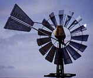
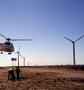

Water
pumping windmill, South Australia, Photograph
Water
pumping windmill, South Australia, Photograph
© 1997 Soren Krohn


Wind Turbine
Design: Basic Load Considerations
Whether you are building wind turbines or helicopters, you have to take the strength, the dynamic behaviour, and the fatigue properties of your materials and the entire assembly into consideration.
Extreme Loads (Forces)
Photograph
© 1998 Soren Krohn
 Wind turbines are built to catch the wind's
kinetic (motion) energy. You may therefore wonder why modern
wind turbines are not built with a lot of rotor blades, like
the old "American" windmills you have seen in the Western
movies.
Wind turbines are built to catch the wind's
kinetic (motion) energy. You may therefore wonder why modern
wind turbines are not built with a lot of rotor blades, like
the old "American" windmills you have seen in the Western
movies.
 Turbines with many blades or very
wide blades, i.e. turbines with a very solid rotor,
however, will be subject to very large forces, when the wind
blows at a hurricane speed. (Remember, that the
energy content of the wind varies with the third power
(the cube) of the wind speed).
Turbines with many blades or very
wide blades, i.e. turbines with a very solid rotor,
however, will be subject to very large forces, when the wind
blows at a hurricane speed. (Remember, that the
energy content of the wind varies with the third power
(the cube) of the wind speed).
 Wind turbine manufacturers have to certify
that their turbines are built, so that they can withstand extreme
winds which occur, say, during 10 minutes once every 50 years.
Wind turbine manufacturers have to certify
that their turbines are built, so that they can withstand extreme
winds which occur, say, during 10 minutes once every 50 years.
 To limit the influence of the extreme winds
turbine manufacturers therefore generally prefer to build turbines
with a few, long, narrow blades.
To limit the influence of the extreme winds
turbine manufacturers therefore generally prefer to build turbines
with a few, long, narrow blades.
 In order to make up for the narrowness of
the blades facing the wind, turbine manufacturers prefer to let
the turbines rotate relatively quickly.
In order to make up for the narrowness of
the blades facing the wind, turbine manufacturers prefer to let
the turbines rotate relatively quickly.
Fatigue
Loads (Forces)
Wind turbines are subject to fluctuating
winds, and hence fluctuating forces. This is particularly
the case if they are located in a very turbulent
wind climate.
 Components which are subject to repeated
bending, such as rotor blades, may eventually develop cracks
which ultimately may make the component break. A historical example
is the huge German Growian machine (100 m rotor diameter) which
had to be taken out of service after less than three weeks of
operation. Metal fatigue is a well known problem in many
industries. Metal is therefore generally not favoured as a material
for rotor blades.
Components which are subject to repeated
bending, such as rotor blades, may eventually develop cracks
which ultimately may make the component break. A historical example
is the huge German Growian machine (100 m rotor diameter) which
had to be taken out of service after less than three weeks of
operation. Metal fatigue is a well known problem in many
industries. Metal is therefore generally not favoured as a material
for rotor blades.
 When designing a wind turbine it is extremely
important to calculate in advance how the different components
will vibrate, both individually, and jointly. It is also important
to calculate the forces involved in each bending or stretching
of a component.
When designing a wind turbine it is extremely
important to calculate in advance how the different components
will vibrate, both individually, and jointly. It is also important
to calculate the forces involved in each bending or stretching
of a component.
 This is the subject of structural dynamics,
where physicists have developed mathematical computer models
that analyse the behaviour of an entire wind turbine.
This is the subject of structural dynamics,
where physicists have developed mathematical computer models
that analyse the behaviour of an entire wind turbine.
 These models are used by wind turbine manufacturers
to design their machines safely.
These models are used by wind turbine manufacturers
to design their machines safely.
Structural
Dynamics: An Example *)
A 50 metre tall wind turbine tower will have a tendency to swing
back and forth, say, every three seconds. The frequency with
which the tower oscillates back and forth is also known as the
eigenfrequency of the tower. The eigenfrequency depends
on both the height of the tower, the thickness of its walls,
the type of steel, and the weight of the nacelle and rotor.
 Now, each time a rotor blade passes the wind
shade of the tower, the rotor will push slightly less against
the tower.
Now, each time a rotor blade passes the wind
shade of the tower, the rotor will push slightly less against
the tower.
 If the rotor turns with a rotational speed
such that a rotor blade passes the tower each time the tower
is in one of its extreme positions, then the rotor blade may
either dampen or amplify (reinforce) the oscillations
of the tower.
If the rotor turns with a rotational speed
such that a rotor blade passes the tower each time the tower
is in one of its extreme positions, then the rotor blade may
either dampen or amplify (reinforce) the oscillations
of the tower.
 The rotor blades themselves are also flexible,
and may have a tendency to vibrate, say, once per second. As
you can see, it is very important to know the eigenfreqencies
of each component in order to design a safe turbine that does
not oscillate out of control.
The rotor blades themselves are also flexible,
and may have a tendency to vibrate, say, once per second. As
you can see, it is very important to know the eigenfreqencies
of each component in order to design a safe turbine that does
not oscillate out of control.
*) A very dramatic example of structural dynamic forces at work under influence of the wind (undampened torsion oscillations) is the famous crash of the Tacoma Bridge close to Seattle in the United States. You may find a short movie clip (700 K) on the disaster on the Internet.
© Copyright 1999 Soren Krohn. All rights reserved.
Updated 19 January 2001
http://www.windpower.org/tour/design/index.htm